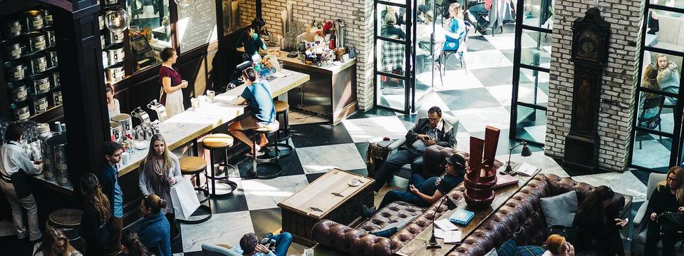

ما بیرجند را از زبان مردمش معرفی میکنیم
«در بیرجند کجا؟» سؤالی است که هر روز در گروههای خانوادگی و دوستانه پرسیده میشود. ما جایی ساختیم که جوابش را همشهریها بدهند.

۳۸٬۶۰۰نظر ثبتشده تا امروز
داستان ما
از یک فهرست ساده تا راهنمای شهر
همهچیز با یک فهرست شروع شد: کافهها و رستورانهایی که دوستانمان پیشنهاد میدادند. خیلی زود فهمیدیم مردم بیرجند برای پیدا کردن دندانپزشک خوب، تعمیرکار مطمئن و سوغات اصل هم به همین پیشنهادها اعتماد میکنند.
امروز «در بیرجند کجا» مرجعی مستقل است که امتیازها را فقط از نظرات کاربران محاسبه میکند. کسبوکارها نمیتوانند نظر حذف کنند یا امتیاز بخرند.
ارزشهای ما
چیزهایی که رویشان کوتاه نمیآییم
استقلال
امتیاز فروشی نیست و تبلیغات همیشه با برچسب مشخص میشود.
صدای مردم
هر نظر تأییدشده، فارغ از مثبت یا منفی بودن، منتشر میشود.
محلی بودن
تیم ما در بیرجند زندگی میکند و شهر را از نزدیک میشناسد.
حریم خصوصی
اطلاعات شخصی کاربران هرگز فروخته یا عمومی نمیشود.
مسیر ما
از ایده تا امروز
- ۱۴۰۲شروع با یک فهرستفهرست کافهها و رستورانهای پیشنهادی دوستان در یک کانال.
- ۱۴۰۳راهاندازی وبسایتاولین نسخه با ۳۰۰ کسبوکار و امکان ثبت نظر.
- ۱۴۰۴داشبورد کسبوکارهاامکان احراز مالکیت و پاسخ رسمی به نظرات.
- ۱۴۰۵بیش از ۲ هزار کسبوکارراهاندازی مجله و نشان «انتخاب مردم».
تیم
به ما بپیوندید